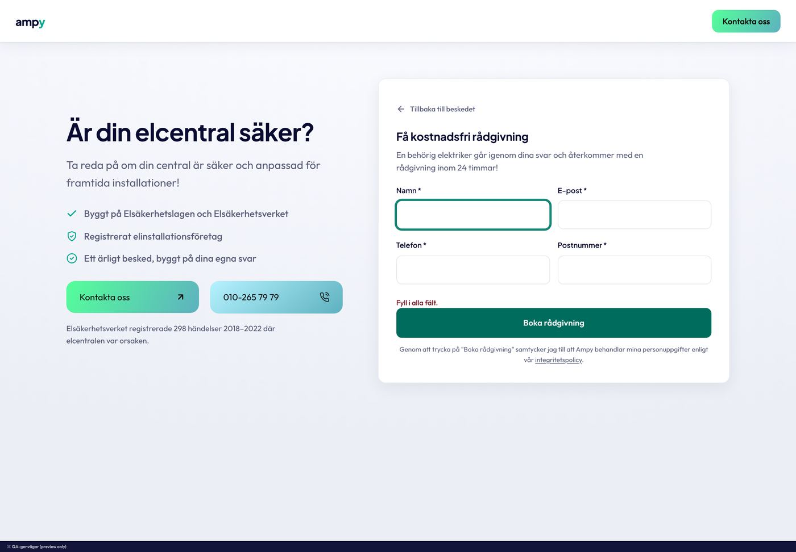

Fält och reglage
Nio inputrecept i källorna blev ett: 48 px högt, radie 12, en kontrollkant som klarar 3:1, en fokusring. Samma språk för sökfält, select, textarea, checkbox, radio-chips, segment, slider och stepper. Fel i rött, aldrig i teal.
Kanon: input elcentral-kollen (assets/elcentralkollen.css:517-518, konsoliderad till 48 h enligt komponentkartan); sökfält elkollen (assets/behorighetskollen.css:716-770) och adresslista main-form (css/styles.css:174-196); select led-kalkylator (styles.css:285-290) med pil ur hero-2-form; textarea main-form (:158-166); checkbox led-kalkylator (:365-393) och elcentral-kollen (:388-392); radio-chips elcentral-kollen (:372-392), rutnät energycalc (vB/tool.css:220-243); segment led-kalkylator (:249-259), toggle ev-kalkylator (prototype/styles.css:439-456); slider led-kalkylator (:216-236) som native range (energycalc :196-213); stepper energycalc (:234-246); hjälp och fel hero-2-alternatives (dist/ampy-hero-primitives.css:525-526) och elcentral (:522). Finns även i: elkollen, LED/EV/battery, energycalc, hero-2 Z, hero-2-form, main-form, booking, fotobedomningen (avvikelser längst ned). Blockbiblioteket: Elcentral-kollen, LED-kalkylatorn, Huvudformuläret.

Så här ser källan ut: Elcentral-kollens formulärsteg vid 1440 (fokus på fältet Namn, felraden "Fyll i alla fält", samtyckesnoten under knappen). Fälten nedan är klonen.
Fältgrupp och input
Etikett 14/600 ovanför, 7 px luft, fältet 48 px med 16 px text (iOS zoomar inte), padding 14, kant --ampy-line-strong (3,39:1; källornas #e3e5ed mäter 1,26:1), radie 12 (10 på mobil). Fokus: kant teal-deep och ringen 0 0 0 3px rgba(0,122,105,.9). Fel: kant i --ampy-error och en felrad i 13/500. Obligatoriskt markeras med asterisk i bläck, valfritt med "(valfritt)". Storlekar: 44 (--sm), 48, 52 (--lg, elcentral).
Postnumret har fem siffror.
Så vi vet vilken elektriker som är närmast.
Så vi vet vilken elektriker som är närmast.
Skriv hela numret.
Sökfält och adresslista
Elkollens sökfält: ikonen 16 px till vänster i svag färg, fältet får vänsterpadding 40. Listan är huvudformulärets adress-combobox: vit, radie 12, skuggan raised, max 260 px hög, träffar med teal-markerad matchning och postnummer till höger. I dokumentationen visas listan statisk (--static); i drift ligger den absolut under fältet.
Select
Native <select> med samma kropp som inputen och en chevron som data-URI (hero-2-forms grepp, färgen är midnight, vit på mörkt). Egen väljare med ikon och lista är kalkylator-kitets produktväljare (S3).
Textarea
Huvudformulärets meddelandefält: minst 70 px, ingen resize-hake, samma kant, radie och fokus som inputen. --resize tillåter vertikal resize.
Checkbox och samtycke
Ritad ruta 20 px (källorna 18 till 22), radie 6, 1,5 px kant, bocken via clip-path ur LED, fylld teal när den är vald. Raden är 44 px hög som träffyta. Det vanligaste mönstret i källorna är dock inget kryss alls: samtycket står som textrad under knappen (elcentral, energycalc, main-form, fotobedomningen; ägarbeslut v2.17), .ampy-consent.
Du behöver godkänna för att vi ska kunna ringa dig.
Radio-chips och val
Elcentral-kollens svarsalternativ: fullbreddskort 56 px (64 från 1024), radie 12, titel 500 med förtydligande rad under, hover med teal-kant och 1 px lyft, valt = teal-kant på teal-tint. Enkelval avancerar direkt; flerval får en ritad 22 px-ruta och en "Fortsätt"-knapp. Rutnätet med ikonrutor är energycalcs värmeväljare, radvarianten elkollens rumschips. Riktiga <input type=radio|checkbox> ligger i chipet, tillståndet läses med :has(:checked).
Segment
LED-kalkylatorns "sunk track, raised pill": ett nedsänkt spår 48 px med 4 px padding, alternativen 40 px, den valda lyfts som vit pill med subtil skugga och text i teal-deep (källan teal-core, 2,96:1). Fyra kalkylatorer bygger samma sak på tre sätt: --pill är EV:s toggle (vald = solid), --line är energycalcs kantade knappar med glidande pill. Spårets färg är ett komponentvärde: sky-mist försvinner mot ett vitt kort.
Slider
LED-kalkylatorns reglage som native <input type=range>: 44 px träffyta, spår 6 px, fyllning teal till emerald upp till tummen, tumme 24 px vit med 3 px teal-kant, tick-knappar 32 px i tabular-nums under. Värdet ovanför i 22/700 med enheten i 500. Fyllningen sätts som --_fill (procent) av skriptet, i drift 1:1 med fingret utan transition.
Stepper
Energycalcs stepper: 1 px kant, radie 6, två knappar 44 gånger 44 med värdet 20/500 emellan, knappen trycks ihop till 92 % och värdet studsar 2 px vid byte. Bunden ände = knappen tonas till 35 %. --pill är LED:s och batterikalkylatorns runda variant (spår, knappar 36).
Hjälp, fel och meddelanden
Hjälptexten säger varför vi frågar (13 px, dämpad). Felraden är 13/500 i --ampy-error-ink med varningsikon och role="alert"; på mörkt #ffb4b6 (hero-2). Meddelanderutan (LED:s lead-msg) för resultat av inskick: ok, fel, info.
Så vi vet vilken elektriker som är närmast.
Fyll i alla fält.
Tack. Vi ringer dig inom 24 timmar på vardagar.
Det gick inte att skicka. Ring oss på 010-265 79 79 så hjälper vi dig.
Värme och missfärgning är klassiska tecken på glappkontakt. Inget av detta? Det är ett bra svar.
Fyll i alla fält.
Tack. Vi ringer dig inom 24 timmar på vardagar.
Det gick inte att skicka. Ring oss i stället.
Anatomi
| Kontroll | Höjd 1440 / 390 | Padding | Radie 1440 / 390 | Typografi | Kant, fokus, fyllning | Källa |
|---|---|---|---|---|---|---|
| Input | 48 / 48 (källan elcentral 52, LED 48) | 0 x 14 / 0 x 10,5 (källan 10 x 12) | 12 / 10,1 (källan 10) | Outfit 400 16, etikett 600 14 | 1 px rgba(9,11,50,.48); fokus #007a69 + 0 0 0 3px rgba(0,122,105,.9); fel #b3261e | elcentral :517-518 |
| Sökfält | 48 / 48 | vänster 40 (källan 36) | 12 / 10,1 | 16; lista 16 / 14,1 | ikon 16 #6a7190; lista 1 px .14, 0 16px 40px .14, max 260 | elkollen :716-770, main-form :174-196 |
| Select | 48 / 48 | 0 x 14, höger 42 | 12 / 10,1 | 16 (källan 15) | chevron 20 midnight, right 14 | LED :285-290, hero-2-form :52 |
| Textarea | min 70 | 9,9 x 14 | 12 / 10,1 (källan 8) | 16 lh 1.4 | som input; resize none | main-form :158-166 |
| Checkbox | ruta 20 (källorna 18 / 20 / 21 / 22), rad 44 | gap 9,9 / 8,3 | 8 / 6,1 (källan 4 / 6) | text 13/400 lh 1.5 | 1,5 px .48; vald teal-core + vit bock 10 px (clip-path) | LED :365-393, elcentral :388-392 |
| Radio-chip | 64 / 56 (källan 64 / 56) | 14 x 19,8 / 10,5 x 13,3 (källan 16 x 20 / 14 x 16) | 12 / 10,1 (källan 10) | titel 500 18 / 14,1 (källan 18 / 15); förtydligande 16 / 13 | 1 px .48; hover teal + lyft 1; vald teal-kant på teal .08 (källan rgb(240,250,248)); ruta 22 | elcentral :372-392 |
| Segment | spår 48, option 40 (LED 48 / 40) | spår 4; option 7 x 5,2 | spår 12 / 10,1; option 8 / 6,1 (källan 12 / 6) | 600 16 / 14,1 (källan PJS 600 15 / 13) | spår rgba(9,11,50,.07); vald vit + 0 1px 2px .06 + text #007a69 (källan #00a991) | LED :249-259 |
| Slider | 44; spår 6; tumme 24; ticks 32 | spår inset 12 | 999 | ticks 13 tabular | fyllning teal till emerald; tumme vit + 3 px teal + 0 10px 30px .07 (källan 0 .4rem 1.2rem .08) | LED :216-236 |
| Stepper | 46 (44 + kant); knappar 44 x 44; --pill 42, knappar 36 | gap 2 | 8 / 6,1 (källan 6); --pill 999 | värde 500 20; knapp 18 | 1 px .14 (källan #d7deeb); hover sky-mist; fokus 2 px teal-deep inset | energycalc :234-246, LED :261-265 |
| Hjälp och fel | 13 / 13 | 0 | 0 | hjälp 400 lh 1.35; fel 500 lh 1.35 | hjälp #565e82; fel #7a1623 (mörkt #ffb4b6) | hero-2 :525-526, elcentral :522 |
Gör och gör inte
- 16 px text i alla fält (iOS-golvet), 44 px träffyta på allt som trycks, en fokusring överallt (kant + ring, aldrig bara alfa .25).
- Minsta lead: namn, telefon, postnummer och samtycke. Hjälptexten säger varför vi frågar; felet säger vad som ska rättas, i rött.
- Samtycke som textrad under knappen när formuläret är kort; checkbox när valet är ett riktigt val.
- Fel i teal (hero-2-form: fel = samma färg som fokus). Kontrollkanter under 3:1 (#e3e5ed), fokusringar under 3:1 (elkollen .25).
- Nio fälthöjder och fem radier: 44 / 48 / 52 är storlekarna, radien är 12. Grå fält utan kant (main-form #f7f7f7), pill-fält.
- Wizard med "Nästa"-knappar mellan enkelval: chipet avancerar självt. Segment för fler än fem val: då är det en select eller chips.
Kod
<div class="ampy-fields">
<div class="ampy-field">
<label class="ampy-field__label" for="tel">Telefon <span class="ampy-field__req" aria-hidden="true">*</span></label>
<input class="ampy-input ampy-input--tabular" id="tel" type="tel" inputmode="tel" autocomplete="tel" required>
</div>
<div class="ampy-field is-error">
<label class="ampy-field__label" for="zip">Postnummer</label>
<input class="ampy-input" id="zip" inputmode="numeric" aria-invalid="true" aria-describedby="zip-e">
<p class="ampy-error" id="zip-e" role="alert">Postnumret har fem siffror.</p>
</div>
<div class="ampy-field ampy-field--full">
<button class="ampy-btn ampy-btn--secondary ampy-btn--block" type="submit">Boka rådgivning</button>
<p class="ampy-consent">Genom att trycka på "Boka rådgivning" samtycker du till att Ampy behandlar dina personuppgifter enligt vår <a href="/integritetspolicy/">integritetspolicy</a>.</p>
</div>
</div>
<!-- Sökfält -->
<div class="ampy-search">
<svg class="ampy-search__icon" aria-hidden="true"><use href="system/ikoner.svg#ik-search"/></svg>
<input class="ampy-input" type="search" placeholder="Sök efter din adress">
</div>
<!-- Select, textarea, checkbox -->
<select class="ampy-select"><option>Snitt brinntid (12,0 h/dygn)</option></select>
<textarea class="ampy-textarea" rows="3" placeholder="Valfritt meddelande"></textarea>
<label class="ampy-check"><input type="checkbox"><span class="ampy-check__text">Jag godkänner …</span></label>
<!-- Radio-chips (enkelval) -->
<fieldset class="ampy-chips"><legend>Hur gammal är elcentralen?</legend>
<label class="ampy-chip"><input type="radio" name="alder"><span class="ampy-chip__body"><span class="ampy-chip__title">Nyare än 10 år</span><span class="ampy-chip__clarifier">Automatsäkringar och jordfelsbrytare</span></span></label>
</fieldset>
<!-- Flerval: lägg till ampy-chip--multi + <span class="ampy-chip__check"><svg>…</svg></span> före __body -->
<!-- Segment -->
<div class="ampy-segment" role="radiogroup">
<label><input type="radio" name="kund" checked>BRF</label>
<label><input type="radio" name="kund">Företag</label>
<label><input type="radio" name="kund">Privat</label>
</div>
<!-- Slider: sätt --_fill i procent när värdet ändras -->
<input class="ampy-range" type="range" min="40" max="400" value="80" style="--_fill:11.1%">
<!-- Stepper -->
<div class="ampy-stepper">
<button class="ampy-stepper__btn" type="button" aria-label="Färre">−</button>
<span class="ampy-stepper__value" aria-live="polite">2</span>
<button class="ampy-stepper__btn" type="button" aria-label="Fler">+</button>
</div>Avvikelser i blocken
| Block | Avvikelse mot kanon | Åtgärd |
|---|---|---|
| elcentral-kollen | input 52 h, radie 10, kant #e3e5ed; etikett PJS 13/600; option radie 10, vald tint rgb(240,250,248) | 48 (--lg finns), 12, --ampy-line-strong; Outfit 14; tint-action .08 |
| elkollen | 48 h, radie 10, fokusring .25 (1,3:1, underkänd); option 72/64 h | fokusring --ampy-focus-ring; chips 64/56 |
| LED, EV, battery | PJS 600 i segment och etiketter, JetBrains Mono i tick och värden; fokus teal .2 till .35; på mörkt fokus rgb(28,196,175) | Outfit + tabular (B7); --ampy-focus-ring; neon-mint (B14) |
| energycalc | fält 44 h, radie 9, bg vit .04, fokus neon; seg-pill #00806e; range 8 px spår, tumme 28 med 2 px kant; stepper radie 6 | 48 (--sm finns), 12; teal-deep; 6 / 24 / 3; radie small |
| hero-2-alternatives (ampy-field) | 56/52 h, fokus 2 px teal + ring .18 med paddingkompensation, invalid 1,5 px #e5484d | 48, fokusringen, --ampy-error |
| hero-2 Z, hero-2-form | 44 h radie 10, fokus 3 px .55; 44/52 h radie 14 utan kant, fel i teal, textarea 78, select-pil #333, checkbox 21 radie 6 med bock #042b24 | 48, kant, fel i rött (B13), pil midnight |
| main-form | 55 h, radie 8, #f7f7f7 utan kant (2 px transparent), fokus 3 px .30, fel #e00000, textarea 70, submit pill | 48, 12, vit med kant, --ampy-error |
| booking | 48 h, radie 14, 1,5 px .48, fel #8a6116, textarea 96 | 12, 1 px; --ampy-error |
| fotobedomningen | 52 h, radie 12, sky-mist-fält med 1 px #5f6480 | vit yta, --ampy-line-strong |
| EV toggle, energycalc byggår | vald solid #007d6b / #00806e | --ampy-action-strong #007a69 |
| live Bricks-formulär | fokus #5eb1bf + ring .2; checked 0 0 0 2px #5eb1bf | fokusringen; #5eb1bf bär aldrig kontrollstatus (B16) |